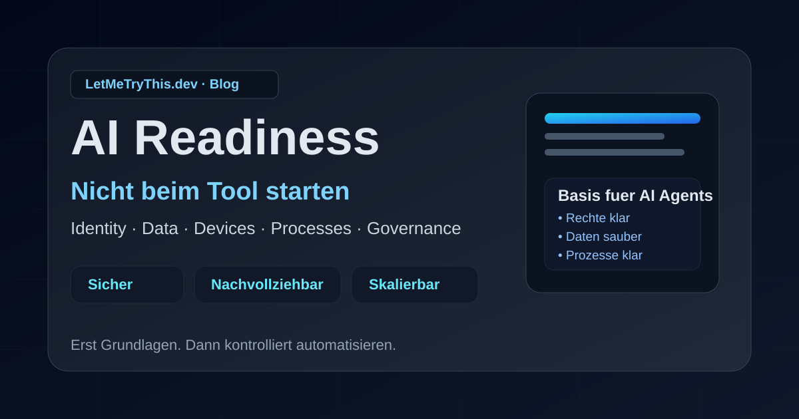

AI · Governance · Security · September 30, 2026
AI Readiness: Why companies should not start with the tool

Many teams start AI with licenses, prompts, or the next shiny feature. In my view, that is the wrong order.
The better question is: can we run AI in a secure, traceable, and sustainable way?
AI readiness means foundations before speed
AI readiness is not tool setup. It is operational readiness. The core areas are:
- identities and permissions
- data and information protection
- devices and technical platforms
- processes and ownership
- governance, security, and controls
If one of these layers is weak, AI will not fix it. It will expose it faster.
1) Keep identities and access clean
Copilots and agents rely on the same access model as your existing systems. Before production, you need clear answers:
- Who can use the solution?
- Which data can it access?
- Which actions is it allowed to perform?
- Who approves and reviews permissions?
Overly broad permissions are already risky. With AI, that risk scales quickly.
2) Data quality defines output quality
AI needs data, but not every dataset belongs in every use case. Without ownership, classification, and clear guardrails, even good agents produce poor outcomes.
No data governance, no reliable AI governance.
3) Endpoints are part of your AI boundary
AI runs on real endpoints: browsers, plug-ins, local assistants, and integrations. Endpoint management is therefore essential, not optional.
You need visibility into which tools run, what they can access, and whether devices stay compliant.
4) Define process first, automate second
An unclear process does not become better with AI. It just executes faster.
For write actions (for example policy or permission changes), you need explicit approvals, ownership, and stop points.
5) Governance must be operational
Governance is not a slide deck. In practice it means roles, approvals, monitoring, quality checks, incident handling, and controlled shutdown.
Compact readiness check
- Use case clearly defined?
- Named business owner?
- Data sources known and classified?
- Least-privilege access applied?
- Write actions behind approvals?
- Monitoring and kill switch in place?
Conclusion
AI readiness does not start with the model. It starts with structure.
Build the foundation first. Then automate with control. Then scale.
It is also important not to ban AI in the company, but to govern it deliberately. I am a supporter of using AI in the enterprise, but with a clear focus on AI readiness so we can become ready quickly without falling behind the pace of change. The real question is not: “Are we allowed to use AI?” but: “How do we become ready fast, safely, and responsibly so we can benefit from the opportunities while keeping control?”